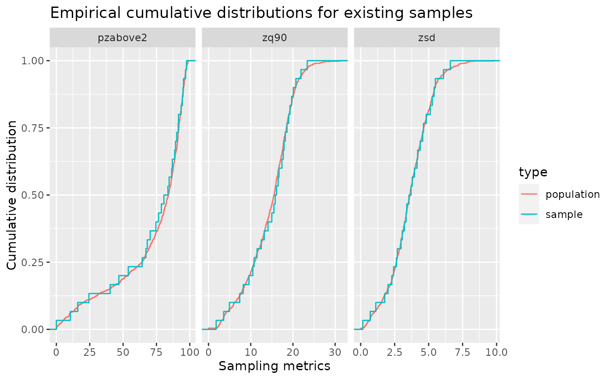

Sub-sample an existing sample using clhs functionality.
Usage
sample_existing(
existing,
nSamp,
raster = NULL,
cost = NULL,
access = NULL,
buff_inner = NULL,
buff_outer = NULL,
iter = 10000,
plot = FALSE,
details = FALSE,
filename = NULL,
overwrite = FALSE,
...
)Arguments
- existing
sf 'POINT'. Existing plot network.
- nSamp
Numeric. Number of desired samples.
- raster
spatRaster. Raster used to define population distributions.
- cost
Numeric/Character. Index or name of covariate within
mrasterto be used to constrain cLHS sampling. If default (NULL), a cost constraint is not used.- access
sf. Road access network - must be lines.
- buff_inner
Numeric. Inner buffer boundary specifying distance from access where plots cannot be sampled.
- buff_outer
Numeric. Outer buffer boundary specifying distance from access where plots can be sampled.
- iter
Numeric. Value giving the number of iterations within the Metropolis-Hastings process.
- plot
Logical. Plots output strata raster with samples.
- details
Logical. If
FALSE(default) output is sf object of systematic samples. IfTRUEreturns a list of sf objects wheretessellationis the tessellation grid for sampling, andsamplesare the systematic samples.- filename
Character. Path to write output samples.
- overwrite
Logical. Choice to overwrite existing
filenameif it exists.- ...
Additional arguments for clhs sampling. See
clhs.
Note
If providing only existing - all attributes will be used for sampling. Remove attributes not indented for sampling
prior to using this algorithm.
See also
Other sample functions:
sample_ahels(),
sample_balanced(),
sample_clhs(),
sample_nc(),
sample_srs(),
sample_strat(),
sample_systematic()
Examples
#--- Load raster ---#
r <- system.file("extdata", "mraster.tif", package = "sgsR")
mr <- terra::rast(r)
#--- generate an existing sample ---#
e <- sample_systematic(raster = mr, cellsize = 200)
#--- perform sub-sampling ---#
sample_existing(existing = e,
raster = mr,
nSamp = 50)
#> 'existing' does not contain attributes with the same names as 'raster'. Extracting metrics.
#> Sub-sampling based on 'raster' distributions.
#> Simple feature collection with 50 features and 3 fields
#> Geometry type: POINT
#> Dimension: XY
#> Bounding box: xmin: 431224.7 ymin: 5337772 xmax: 438539.5 ymax: 5343231
#> CRS: +proj=utm +zone=17 +ellps=GRS80 +towgs84=0,0,0,0,0,0,0 +units=m +no_defs
#> First 10 features:
#> zq90 pzabove2 zsd geometry
#> 49776 24.10 95.7 4.43 POINT (435110.1 5338507)
#> 150100 18.40 91.1 4.79 POINT (432383.5 5341600)
#> 86115 15.10 81.2 4.01 POINT (438146.6 5342633)
#> 39416 21.00 97.0 3.90 POINT (434270.5 5339474)
#> 383100 3.53 26.5 0.68 POINT (434182 5341672)
#> 80041 2.49 10.0 0.36 POINT (437691.9 5339011)
#> 899100 18.20 92.2 3.23 POINT (438467.1 5339643)
#> 643 9.39 87.0 2.21 POINT (436325.2 5338156)
#> 3123 19.80 80.7 5.07 POINT (431336 5342759)
#> 34886 17.90 96.0 4.02 POINT (433911 5338459)
#--- extract metrics to sample ---#
e <- extract_metrics(mr, e)
#--- perform sub-sampling ---#
sample_existing(existing = e,
nSamp = 30,
plot = TRUE)
#> Sub-sampling based on 'existing' metric distributions.

#> Simple feature collection with 30 features and 3 fields
#> Geometry type: POINT
#> Dimension: XY
#> Bounding box: xmin: 431120.1 ymin: 5337875 xmax: 438459.1 ymax: 5343152
#> CRS: +proj=utm +zone=17 +ellps=GRS80 +towgs84=0,0,0,0,0,0,0 +units=m +no_defs
#> First 10 features:
#> zq90 pzabove2 zsd geometry
#> 701 15.00 49.2 4.32 POINT (436844.3 5340178)
#> 18 18.80 87.0 6.01 POINT (431248.8 5339953)
#> 581 4.12 15.2 0.92 POINT (435764.6 5342136)
#> 440 16.20 84.3 3.22 POINT (434638 5340290)
#> 801 4.93 6.6 1.12 POINT (437724 5338212)
#> 623 10.20 31.9 2.62 POINT (436124.1 5343152)
#> 395 2.50 2.0 0.63 POINT (434278.5 5339274)
#> 414 7.36 88.7 1.86 POINT (434414 5340881)
#> 775 9.30 52.0 2.53 POINT (437516.2 5338404)
#> 122 10.90 84.8 2.22 POINT (432151.5 5342391)